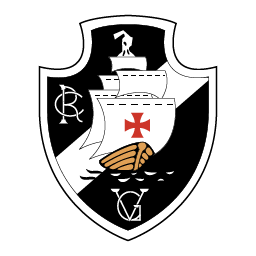

Fluminense Football Club
Fluminense Football Club is a Brazilian sports club based in neighbourhood of Laranjeiras, in Rio de Janeiro, being the oldest football club in the state since its foundation in 1902.
Botafogo de Futebol e Regatas

Botafogo de Futebol e Regatas is a Brazilian sports club based in the neighborhood of Botafogo, in the city of Rio de Janeiro. Although they compete in a number of different sports, Botafogo is mostly known for its association football team.
Clube de Regatas do Flamengo

Clube de Regatas do Flamengo, more commonly referred to as simply Flamengo, is a Brazilian multi sports club based in Rio de Janeiro, in the neighborhood of Gávea, best known for their professional football team. They are one of two clubs to have never been relegated from the top division, along with São Paulo
CR Vasco da Gama
Club de Regatas Vasco da Gama, commonly referred to as Vasco da Gama or simply Vasco, is a sports club based in Rio de Janeiro, Brazil